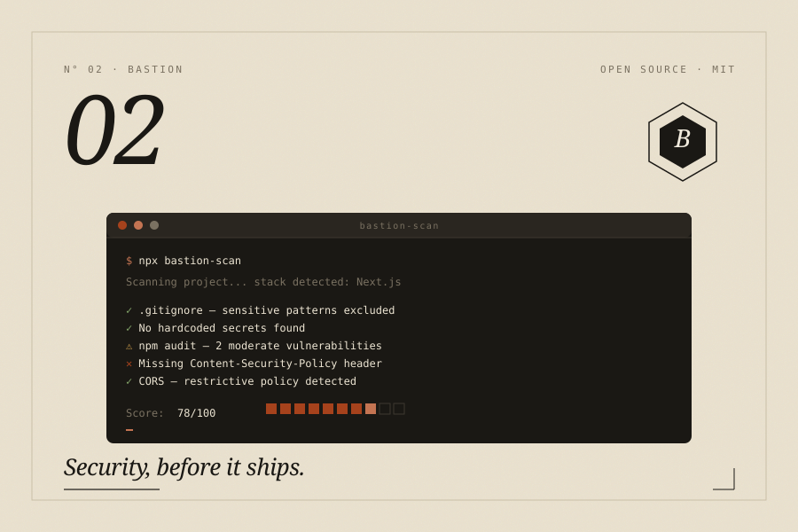

Bastion
A security scanner you can run on your own machine. Free, open source, and built for people shipping a lot of AI-written code.

Why I built it
A lot of code being shipped right now is written with AI help, and a lot of it has basic security problems. Hardcoded API keys, missing headers, CORS policies that are wide open. Stanford research says AI-generated code has roughly 40% more vulnerabilities than code written by hand. The tools that catch this kind of thing start at £300 a month, which rules out most indie developers and small teams.
Bastion is what I wanted to exist. You run npx bastion-scan, it checks your project for the twelve most common problems in a few seconds, and it writes a fix prompt for each one. Paste that prompt into Claude or ChatGPT and you can ship the fix the same afternoon.
It's MIT licensed and open source. Nothing uploads anywhere, no accounts, nothing leaves your machine. It scans itself at 100 out of 100, has 759 tests, and ships with npm provenance. There's a Pro tier that adds more checks and a dashboard, but the scanner itself is free and will stay that way.
What it checks
Config and secrets
Checks your .gitignore, validates your .env.example, and finds hardcoded API keys for OpenAI, AWS, Stripe, and others before they end up in your repo.
Security headers and transport
Looks at CSP, HSTS, X-Frame-Options, and X-Content-Type-Options. Checks your SSL certificate expiry, TLS version, and HTTPS redirects. The basic stuff browsers expect to see.
CORS, rate limiting, and auth
Flags wildcard CORS paired with credentials, missing rate-limit middleware, and API routes that don't have any auth in front of them.
Code patterns and dependencies
Looks for SQL strings being concatenated, uses of eval(), and runs a full npm audit with CVE references and the version you need to upgrade to.
Fix prompts for your LLM
Every failing check comes with a prompt written for your specific stack. Paste it into Claude or ChatGPT, get the fix, ship it.
The stack
Elsewhere